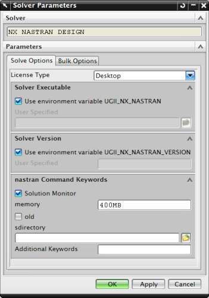

Solving a model
After you prepare your FE model by defining a mesh and applying boundary conditions, you can solve the model.
A solve writes the solver input file, and then automatically begins processing. You can also choose to write out the solver input file without solving it. Doing so allows you to manually edit a solver input file during a solve.
Solutions and subcases
A solution, which is stored in the Simulation file, contains a set of loads and constraints.
Each solution contains additional storage elements called subcases. Each subcase holds solution entities such as loads and constraints.
-
NX Nastran structural solves: constraints can be stored in the main solution or in the subcases; loads are stored in subcases.
-
NX Nastran thermal solves: loads and constraints are both stored in subcases.
Solution attributes
Solution attributes define options for the solver. You can define solution attributes for a new solution, or for an existing solution before you solve.
The options available depend on the analysis type (for example, Structural), and the solution type (for example, Linear Statics — Single Constraint).

Solver parameters
Solver parameters include settings for the solver.
